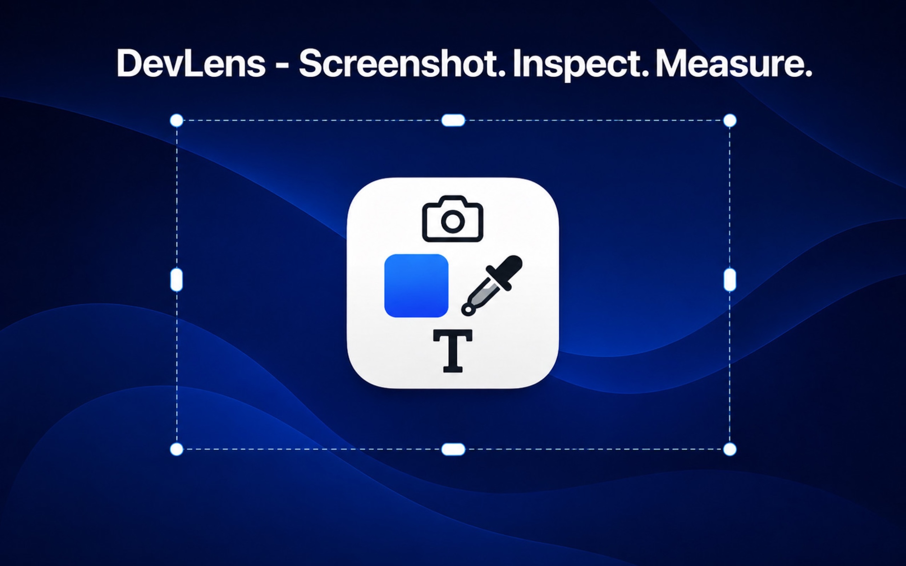
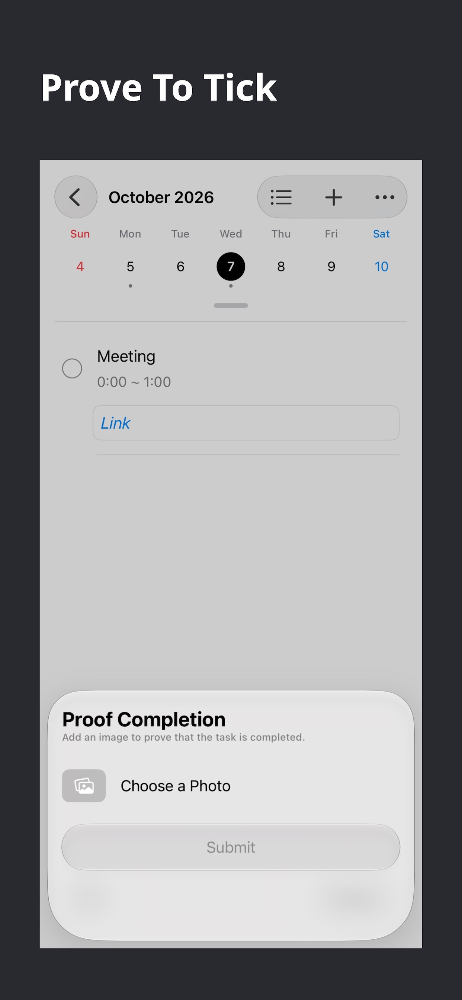
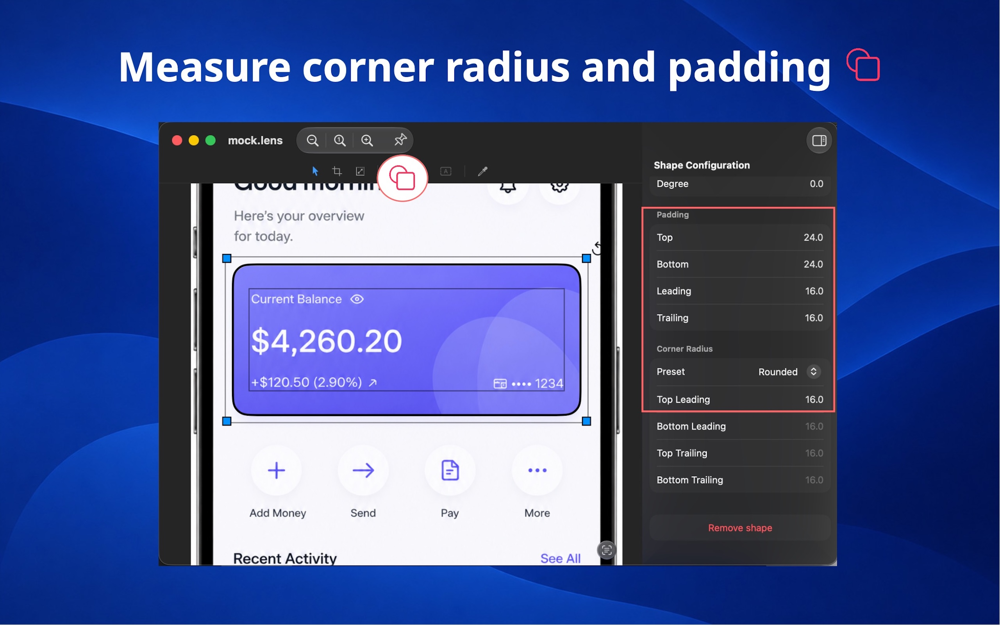
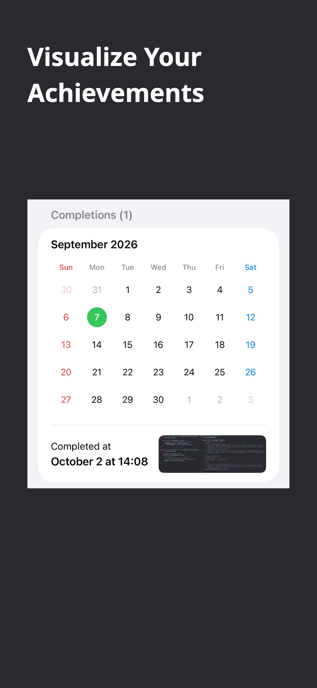
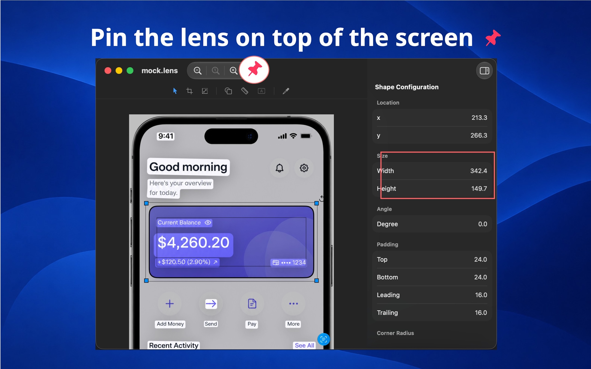

DevLens
Whether you're implementing an AI-generated mockup, a client-provided PNG, an App Store screenshot, or a beautiful UI you found online, DevLens helps you inspect and measure exactly what you see.
Design files aren't always available. And even when they are, measurements from design tools don't always translate perfectly to iOS and macOS. DevLens gives you a fast, visual workflow to inspect the final rendered result instead.
AI can generate beautiful UI concepts, but they're often delivered as images. When your client expects a pixel-perfect implementation, DevLens lets you inspect every detail without guessing.
Many clients send PNGs instead of design files. No layers. No measurements. No typography information. Just an image.
DevLens turns that screenshot into a reference you can actually work with.
Found an interface you love? Inspect its spacing, colors, and layout to better understand how it's put together.
Measurements from design tools sometimes don't match what you see on the actual device. DevLens helps you inspect the rendered result, making it easier to fine-tune your implementation.
Stop estimating.
- Measure any distance with a simple ruler
- Check spacing and padding visually
- Match corner radius with adjustable overlays
- Pick colors instantly
- Zoom in for pixel-level inspection
Everything is measured directly from the image, giving you reliable pixel measurements without unnecessary complexity.
No more retyping UI copy.
Select text directly from screenshots and copy it to your clipboard, ready to paste into your project.
Perfect for:
- Button titles
- Labels
- Error messages
- Marketing copy
- UI strings
Every screenshot opens in its own lightweight floating window.
Pin screenshots above your workspace, arrange multiple references side by side, and keep them visible while you code.
No constantly switching between Preview, Finder, or browser tabs.
DevLens focuses on the information engineers actually need:
- Pixel measurements
- Spacing and padding
- Corner radius
- Color values
- Text extraction
- Always-on-top reference windows
No clutter. No unnecessary editing tools. Just the fastest way to inspect screenshots and build interfaces with confidence.




